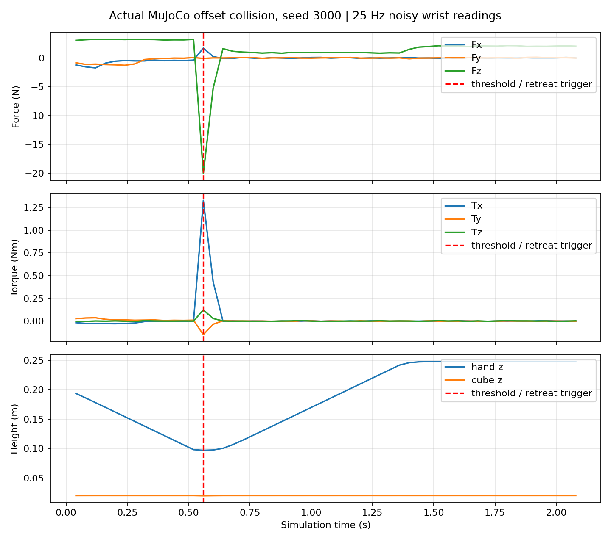

给观测加误差
独立零均值高斯噪声：物体相对位置 σ=3 mm，手位置 0.5 mm，手速度 5 mm/s，物体速度 10 mm/s，腕力 0.05 N、力矩 0.002 N·m。强噪声将策略观测误差乘 5，独立检测器仍保留原噪声级别。
这是合成读数误差，不是摩擦、质量随机化，也不是视觉遮挡、延迟或真实传感器模型。
MUJOCO · FORCE / TORQUE · PPO
给传送带夹爪一点噪声，再把目标推离原位。
这次不只记录成功，也把漏抓、误报警和强噪声失效放在桌上。
每组 100 次，seed=3000–3099，合计 600 次。噪声测试使用同一个冻结 PPO；漏抓与抓偏使用专门脚本，并非 PPO 的鲁棒性结论。
| 条件 | 抓取成功 | 触发腕部阈值 | 怎么理解 |
|---|---|---|---|
| PPO / 无观测噪声 | 100 / 100 | 38 / 100 | 正常抓取也会报警 |
| PPO / 轻噪声 | 100 / 100 | 17 / 100 | 报警只记录，不干预策略 |
| PPO / 五倍噪声 | 0 / 100 | 47 / 100 | 没有学会强噪声鲁棒性 |
| 旧目标 + 物体前移 | 0 / 100 | 0 / 100 | 100 次均漏抓、未接触 |
| 抓偏 55 mm + 规则收手 | 0 / 100 | 100 / 100 | 100 次触发收手，不是抓取成功 |
| 同样抓偏 / 不收手 | 0 / 100 | 100 / 100 | 持续碰撞对照 |
成功判据与报警独立：两指法向力各 >0.1 N，物体中心高度 >100 mm，连续保持 0.6 秒。接触力来自仿真真值，不是从腕力推断。“没报警”不能证明抓到了。
独立零均值高斯噪声：物体相对位置 σ=3 mm，手位置 0.5 mm，手速度 5 mm/s，物体速度 10 mm/s，腕力 0.05 N、力矩 0.002 N·m。强噪声将策略观测误差乘 5，独立检测器仍保留原噪声级别。
这是合成读数误差，不是摩擦、质量随机化，也不是视觉遮挡、延迟或真实传感器模型。
脚本在手下降到 95 mm 以下时冻结目标，对物体施加向前 2 N、持续 0.12 秒的外力，然后在旧位置闭合、抬升。实际施力，不瞬移、不吸附。
100 次全部漏抓且没有力报警。这说明过时目标会失败，不代表闭环 PPO 在同样扰动下一定失败。
脚本横向偏移 55 mm，下探时手指直接碰到物体。腕力残差范数 >1.5 N，或力矩残差范数 >0.035 N·m，锁存报警；下一控制步打开夹爪、抬升至 250 mm。
物理 500 Hz，控制及检测 25 Hz。它不能阻止第一次撞击，也不是安全等级急停。
下探的惯性同样会改变腕力。这里用同状态、同控制、禁用接触的第二个 MuJoCo 模型预测无接触基线，再减去它。这个理想化副模型知道精确质量和动力学，不能直接迁移成真实硬件估计器。

100 次抓偏对照中，规则收手把平均采样峰值指尖法向合量从 71.44 N 降至 21.97 N，25 Hz 近似法向接触暴露积分从 107.18 N·s 降至 1.164 N·s。后者不是有符号净冲量，也不是损伤指标；低频采样可能漏掉更高的瞬态峰值。
包含原创环境与实验代码、冻结策略、600 次结果 JSON、视频对应逐帧数据、图表、依赖版本与中英文说明。只含合成实验资料；去除了运行环境日志。依赖软件需另行安装并遵守各自许可。
python3.12 -m venv .venv
source .venv/bin/activate
pip install -r requirements-lock.txt
# 系统需安装 ffmpeg；无显示环境需可用 EGL
MUJOCO_GL=egl python experiments.py本次环境：MuJoCo 4.0.1、Gymnasium 1.4.0、Stable-Baselines3 2.9.2、PyTorch 2.15.0 CPU。图表脚本额外使用 matplotlib。复现需要受支持的 Python 3.12 和图形驱动；不同平台或依赖版本可能影响数值。